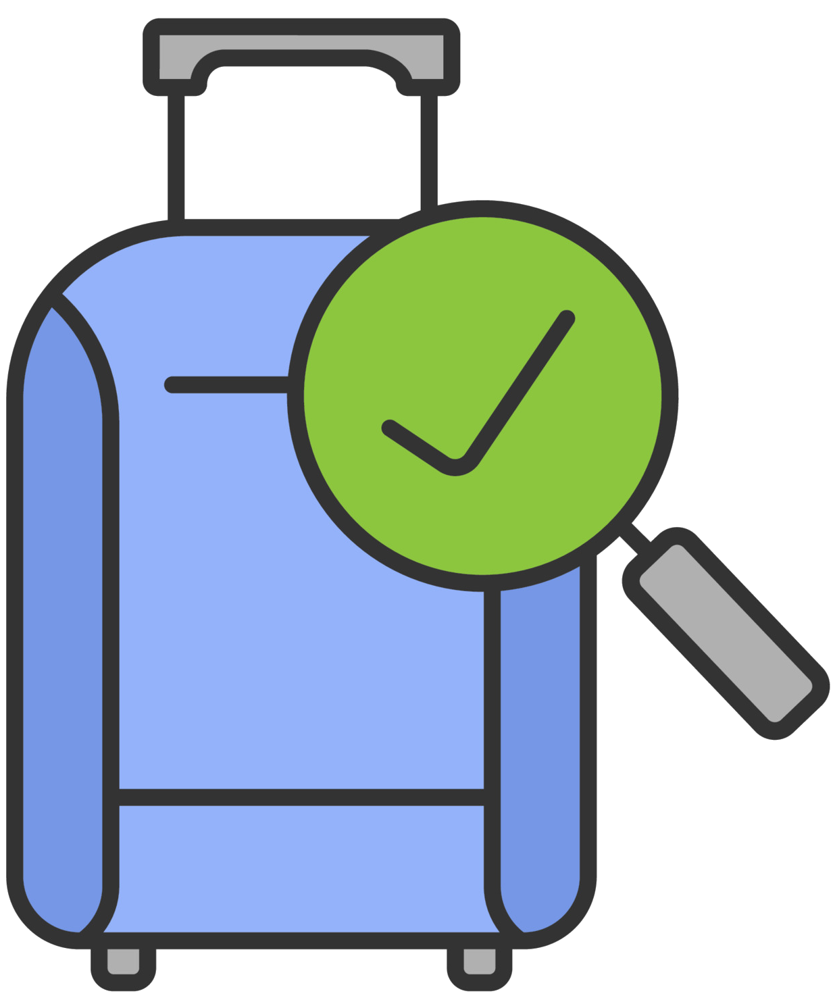
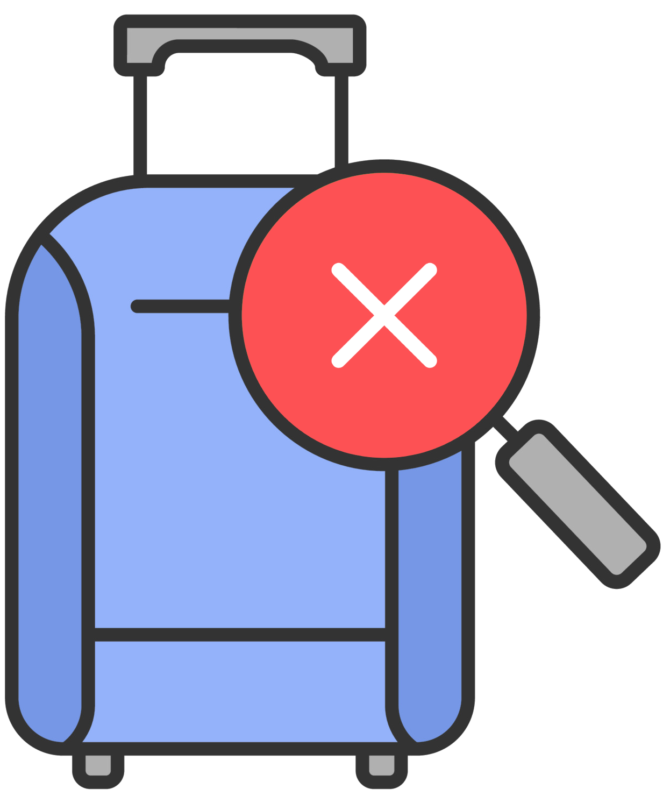

@if (UserService.userInfo?.role == UserRole.Passenger) {
} @else if (UserService.userInfo?.role == UserRole.Personnel) {
}
@if (
btService.qrCodeScanResult()?.scanResult == QrCodeScanResult.Success &&
btService.qrCodeScanResult()?.baggage?.baggageStatus !=
BaggageStatus.ReceivedByThePassenger
) {
You received your baggage!
You can mark it as 'received' down below.
} @else if (
btService.qrCodeScanResult()?.scanResult == QrCodeScanResult.NotOwnedByPassenger
) {
Baggage does not belong to you.
}
@if (
btService.qrCodeScanResult()?.scanResult == QrCodeScanResult.Success &&
btService.qrCodeScanResult()?.baggage?.baggageStatus !=
BaggageStatus.ReceivedByThePassenger
) {
Please set the appropriate baggage status.
}
@if (btService.qrCodeScanResult()?.scanResult == QrCodeScanResult.CodeInvalid) {
Baggage QR Code is invalid.
} @else if (
btService.qrCodeScanResult()?.baggage?.baggageStatus ==
BaggageStatus.ReceivedByThePassenger
) {
Baggage already received by passenger.
}
@if (btService.qrCodeScanResult()?.scanResult == QrCodeScanResult.Success) {

Scan Successful
Baggage Name: "{{
btService.qrCodeScanResult()?.baggage?.baggageName
}}"
Current Status:
{{
toTitleCase(
String(btService.qrCodeScanResult()?.baggage?.baggageStatus)
)
}}
} @else {

Scan Failed
}
@if (statusOptions.length == 1) {
} @else {
}